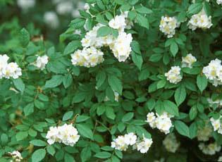

Multi Flora Rose

Description:
The leaves are pinnate and compound.The shape is eliptical with serrated margins. This is a climbing shrub with red thorns. The flowers are white with 5 flat petals. The fruit are clusters of red berries.
How to get rid of it?
First you have to cut it down to a stump using a blade of some kind. Then apply systemic herbicide.
What to replace it with?
Multi Flora Rose can be replaced with native Virginia Rose.